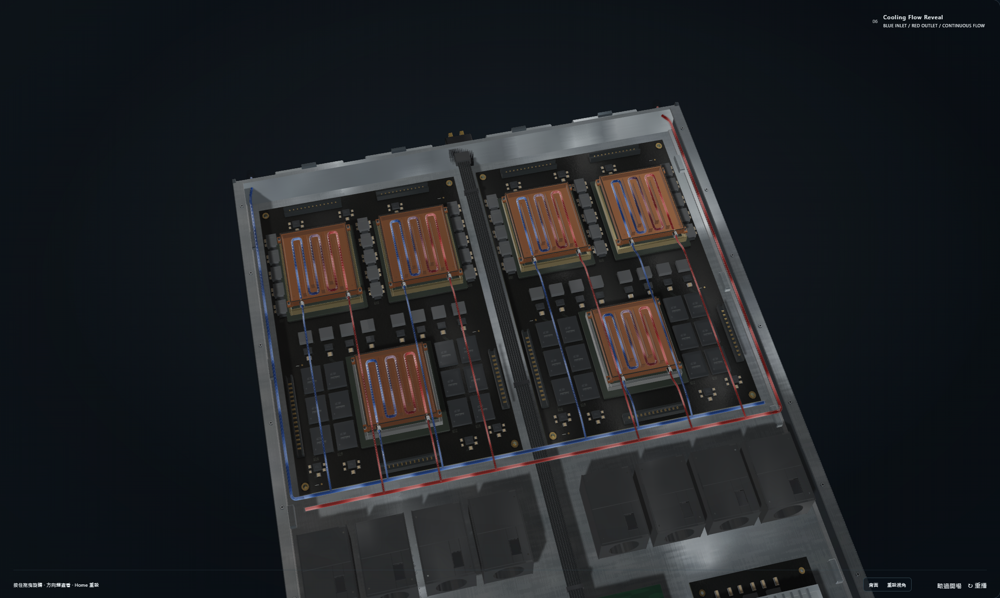
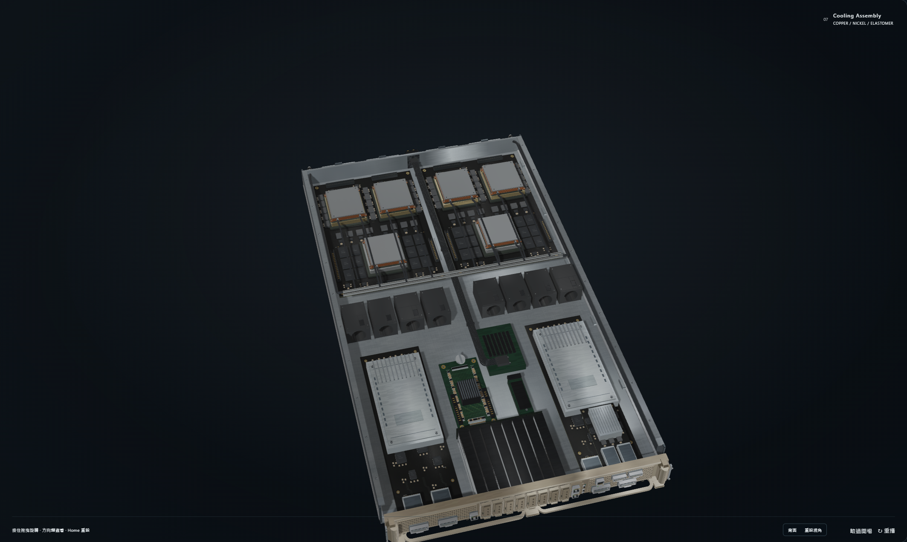
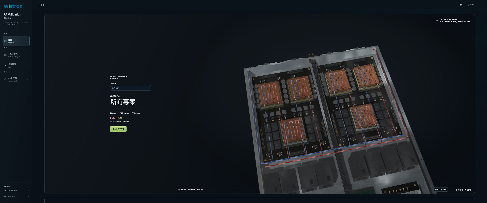
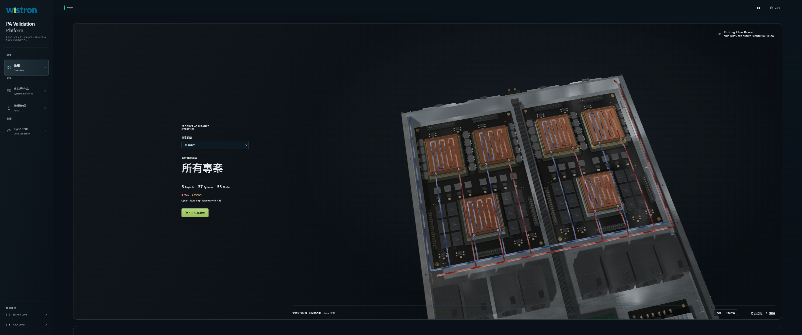

L10 Cooling Assembly Final RC · Final frozen Round 2
Visual score: 86.5/100 · Target 90: FAIL. Engineering results and historical KNOWN BASELINE FAIL findings are reported separately below.
Native Chromium / WebGL screenshots. Raw PNGs are linked directly; no image postprocessing. Baseline 108ffbc5b4bc4faf4eb4f1ebf785ebd3b1c89a5c. Capture validation PASS establishes camera/resource consistency and runtime evidence; it is not a photorealism score.
The original environment, HDR source, exposure, rotation and tone mapping remain fixed. Both variants use the accepted V3 filtered environment. Final RC keeps all cameras, illumination, exposure and tone mapping unchanged. Macro comparisons use the same existing inspection presets in both variants.
Final visual review · 兩輪已凍結；本機現行工程驗收 PASS；視覺 90 分目標未達
以 108ffbc5 V3 為基準，僅執行有測量與畫面支持的局部精修。正常 Dashboard 的動態流體核心更清楚；金屬大平面仍有 CAD 感，接觸陰影及加工細節在正常尺寸下仍偏弱。保守評估 86.5/100，不能標示照片級或 90 分驗收通過。第二輪完成後停止，不再開展第三輪。
Commit: 本報告隨 Final RC 提交；精確提交 SHA、推送結果及該 SHA 的遠端 CI 請見最終交付訊息。避免自參照提交雜湊。 · Overall visual score: 86.5
Engineering acceptance
Historical baseline108ffbc raw failures are retained separately from current results: Original core baseline output · Original V2 baseline output · Historical execution record. The original assertions are unmodified. The final engineering table above reports the current suite status; a historical failure is not presented as a current PASS or an unresolved current defect.
Blender / GLB / PBR changes
- Blender/build.py：12 條分支流體核心半徑 .0068 → .009；22 條中心線、端點、流向、六冷板接觸與實體水管管徑均不變。六冷板內流道 .009、主幹 .0105 原樣保留。
- Blender/GLB：12 個既有接頭增加六面淺扳手平面，位於原 .020 最大半徑內；內孔半徑 .0145（孔徑 .029）、密封圈與軸線不變。不新增無用途裝飾。
- PBR：新增 256×256 cooling-socket-contact-ao.png，以 CPU-L 同型接頭/管/冷板幾何進行每 texel 48 cosine rays、距離 .022 的局部 AO 烘焙，重用於 12 同型端口。只接入 Machined nickel fittings 的 occlusion；不改 Albedo/Metallic/Roughness，無 emission/bloom。
- 原四張 MR maps 與全部 12 材質 PBR factors 不變；受保護固體（除明列的 12 個接頭精修）POSITION/NORMAL 保留。GLB 未匯出 TANGENT accessor。Blender 重建產生生成 UV 最大 2.3841858e-7 差異，低於 .000123 個 512px texel；12 個增粗核心重焊接的法線浮點差異有獨立精度記錄。原 flow 距離 UV 與 header UV 精確保留。未宣稱全部 accessor byte-identical。
- Runtime Round 1：調整光學密度前緣的寬度與對比，移除流體高頻 travelling normal ripple；保留 .85 流速、.38 波長、統一 Timeline、分支相位、熱色漸變、alpha 與 Fresnel。
- Runtime Round 2：僅既有 CPU/GPU 蓋板方向性環境反射係數 .07/.16 → .14/.28；這是既有近似反射模型的微調，不宣稱 measured anisotropic BRDF。
- Rack：只修 gold editorialCarrierStamp rim 法線來源為單位向量。原 V3 blanking renderer、設備數量、U 位、Inventory、所有其他 Mesh 與動畫保持不變。
- 更新兩處頁面 core/rack cache keys 與 companion GLB cache key。新增 Final contract、可重現 QA / capture / measurement scripts 及原始證據。未修改舊測試、Camera、Lighting、Exposure、Tone Mapping、HDR/IBL atlases、Timeline 或 Engine。
Cooling GLB SHA-256: 88eec60c20e775a431b446da311f3a1476cc2774173e628adc170ae3ac1f5a3f
Unresolved issues / limits
- 視覺 90 分目標 FAIL：本輪 86.5/100；大面積冷板及上蓋仍帶 CAD/CGI 均勻感，沒有照片級驗收。
- 正常 Dashboard 的小接頭、密封圈與管根 AO 仍不突出；流向主要靠移動前緣判讀，靜態圖不能充分證明方向。
- 既有完整開蓋總成停留偏短；水流近景優先看六冷板與支路，SSD/正面部分離開畫面。Rack 導軌特寫也會裁掉下方設備，不宣稱全片任何時刻皆完整入鏡。關蓋本身完整入鏡。未更改 Camera 或縮短 Rack 演出。
- 完整原生影片容器 44.88 秒，包含完整 39.7 秒 authored 演出及前後空檔；不是精剪恰 39.7 秒的影片交付。
- 舊 V2 Whole-Rack Source Freeze 保留為 KNOWN BASELINE FAIL，由版本化精確 Final Contract 管理已批准例外；不能描述成舊測試全通過。
- 隨提交報告產生時 Remote CI 尚未執行，須以最終交付中該 SHA 的 run 結果為準；遠端不執行 GPU 視覺驗收。
- impeccable 檢查仍指出既有 Dashboard shell 對比、小字及 token 等警告；本輪未修改 CSS，不將 exit 0 誤寫成 accessibility PASS。
- 尺寸為概念視覺化座標，不是 OEM CAD、加工圖、流量/壓降或 CFD/製造認證。
A · Bare Board Hero
Controlled comparison: identical camera matrices, lighting, exposure and tone mapping.
B · Cold Plate Installation
Controlled comparison: identical camera matrices, lighting, exposure and tone mapping.
C · Manifold / Plumbing
Controlled comparison: identical camera matrices, lighting, exposure and tone mapping.
D · Dynamic Cooling Flow
Controlled comparison: identical camera matrices, lighting, exposure and tone mapping.
E · Solid Cooling Assembly
Controlled comparison: identical camera matrices, lighting, exposure and tone mapping.
F · Lid Closure
Controlled comparison: identical camera matrices, lighting, exposure and tone mapping.
G · Gold Front Panel / Eight E1.S Slots
Controlled comparison: identical camera matrices, lighting, exposure and tone mapping.
H · Rack Integration
Controlled comparison: identical camera matrices, lighting, exposure and tone mapping.
Actual Dashboard · 2127 × 1272 WebGL canvas
Shipping Dashboard with its original layout and authored camera. The 3440 × 1440 browser viewport produces this 2127 × 1272 canvas; this is not the full-window review camera. The two flow times share the same route geometry, lighting and speed.

Before · V3 108ffbc · dashboard-flow-A-2127x1272After · Final frozen Round 2 · dashboard-flow-A-2127x1272Before · V3 108ffbc · dashboard-flow-B-2127x1272After · Final frozen Round 2 · dashboard-flow-B-2127x1272 
Before · V3 108ffbc · dashboard-solid-2127x1272After · Final frozen Round 2 · dashboard-solid-2127x1272Complete Dashboard viewport

Before · V3 108ffbc · dashboard-flow-full-page-3440x1440
After · Final frozen Round 2 · dashboard-flow-full-page-3440x1440Manifold · controlled original close view
Controlled comparison: identical camera matrices, lighting, exposure and tone mapping.
Cold Plate / Connectors · controlled original close view
Controlled comparison: identical camera matrices, lighting, exposure and tone mapping.
Before · V3 108ffbc · Cold Plate / Connectors · controlled original close view · renderer stateAfter · Final frozen Round 2 · Cold Plate / Connectors · controlled original close view · renderer state Manifold macro · controlled camera
Controlled comparison: identical camera matrices, lighting, exposure and tone mapping.
Cold Plate connector macro · controlled camera
Controlled comparison: identical camera matrices, lighting, exposure and tone mapping.
Lid sequence · 16.4 s / 17.0 s / 17.6 s
The fixed-camera sequence separates material changes from the authored cinematic framing. The recorded closure fractions are 0 / 0.5 / 1. At 16.4 seconds the raised cover is already visible; the additional native 16.0-second image below documents the completely open cooling assembly before it appears.
Before closure · 16.4 s
Controlled comparison: identical camera matrices, lighting, exposure and tone mapping.
Mid closure · 17.0 s
Controlled comparison: identical camera matrices, lighting, exposure and tone mapping.
After closure · 17.6 s
Controlled comparison: identical camera matrices, lighting, exposure and tone mapping.
Native cinematic · before closure
Authored cinematic camera; no final-RC camera changes are authorized. Native frames complement the controlled camera material comparisons.
Native cinematic · mid closure
Authored cinematic camera; no final-RC camera changes are authorized. Native frames complement the controlled camera material comparisons.
Native cinematic · after closure
Authored cinematic camera; no final-RC camera changes are authorized. Native frames complement the controlled camera material comparisons.
Rack · full front
Controlled comparison: identical camera matrices, lighting, exposure and tone mapping.
Rack · exploded animation context
Controlled comparison: identical camera matrices, lighting, exposure and tone mapping.
Before · V3 108ffbc · Rack · exploded animation context · renderer stateAfter · Final frozen Round 2 · Rack · exploded animation context · renderer state Bottom nine U1–U9 physical1U panels · native crop
Native Chromium screenshot crop, without resampling or pixel editing. Camera and illumination match the full-front frame.
Bottom U1–U4 · native full-front crop
Native Chromium screenshot crop, without resampling or pixel editing. Camera and illumination match the full-front frame.
Adjacent U5–U9 · native full-front crop
Native Chromium screenshot crop, without resampling or pixel editing. Camera and illumination match the full-front frame.
Upper U47–U48 · native full-front crop
Native Chromium screenshot crop, without resampling or pixel editing. Camera and illumination match the full-front frame.
Bottom original physical1U panels
Controlled comparison: identical camera matrices, lighting, exposure and tone mapping.
Upper original physical1U panels
Controlled comparison: identical camera matrices, lighting, exposure and tone mapping.
Protected hardware reference views
BF3 × 2 / CX7 × 1
Controlled comparison: identical camera matrices, lighting, exposure and tone mapping.
Bounded visual-review provenance
Selected native Round1 screenshots and their unedited renderer-state sidecars are retained below. Final review states explicitly whether Round2 was used; no score is inferred from these files.
Measured screen-space pipe and stream widths
Actual GLB ring vertices projected through captured VP × model × part matrices. Physical shell vertices are independently matched at the same authored section. No screenshot mask or guessed edge measurement is used. These are geometric widths, not a guarantee of perceived readability: occlusion, Fresnel response, optical-density contrast and antialiasing can make the visible core narrower.
Complete native WebM recording
Authored cinematic duration: 39.7 seconds. Measured Replay wall time: 39.827 seconds. Native file duration: 44.88 seconds. The uncut file includes initial loading/setup and completion overhead; no speed change, frame interpolation or reconstructed frames were used.
Open complete native WebM · Timing, source hashes and actual clock trace